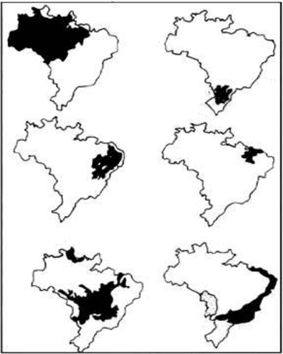
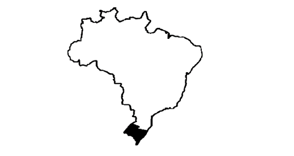

Conteúdo: Mata dos Cocais, Pantanal, Cerrado, Caatinga, Pampas.
Objetivo: Identificar as principais características das vegetações do Brasil: Mata dos Cocais, Pantanal, Cerrado, Caatinga, Pampas e os impactos da interferência humana nesses domínios.
Questão 01
(2019) Sobre o Pantanal, julgue os itens a seguir e assinale apenas as proposições que apresentam características desse bioma.
I. A fauna é semelhante à do bioma Amazônia. A flora conta com aproximadamente 20 mil espécies de vegetais.
II. Conhecido também como Campo Sulino, esse bioma abrange o território do estado do Rio Grande do Sul.
III. É considerado uma das maiores planícies alagadas do mundo, sendo o menor bioma em extensão territorial do Brasil.
IV. Esse bioma compreende a bacia hidrográfica do Rio Paraguai, e o clima predominante é o tropical.
Assinale a alternativa correta:
a) I - III – IV.
b) II – III.
c) II- III – IV.
d) III – IV.
Questão 02
(PUC-SP 2018) O texto abaixo deve ser lido como apoio para responder a questão.
“A imensa riqueza social e natural do Cerrado está ameaçada de se perder. No ritmo atual de devastação, o bioma como tal pode desaparecer para sempre já em 2030. As consequências socioambientais desse processo são dramáticas e ainda serão mais, como diversos analistas e organizações sociais vêm alertando, caso não seja feito um esforço articulado para impedir que essa expansão para a produção de commodities continue nos moldes de violência, predação e empobrecimento que a tem caracterizado”.
(Le Monde Diplomatique Brasil, março de 2018, nº128, suplemento especial).
O texto apresenta uma enorme preocupação com o 2º maior bioma em área do Brasil. Assinale a alternativa que apresenta de forma explícita fatos, características e tendências que podem ser identificados de forma implícita no texto.
a) O desmate do Cerrado tem uma relação direta com o avanço da pecuária leiteira, atividade que cresce em um ritmo muito acelerado no Centro-Oeste brasileiro, transformando Goiás no 1º produtor de leite e derivados, ultrapassando Minas Gerais em 2017.
b) O Cerrado conta hoje com algo em torno de 48% de sua cobertura original. O agronegócio, com destaque para o plantio da soja, carrega a bandeira do “campo moderno” e avança sobre a fronteira agrícola, transformando matas nativas em imensos desertos verdes.
c) O solo que sustenta a imensa diversidade fitobotânica do cerrado é de grande fertilidade, chamado de massapê e tem origem na decomposição do gnaisse. O massapê é utilizado, sobretudo, para o plantio da laranja e da soja.
d) O clima tropical úmido predomina no bioma Cerrado e, por apresentar chuvas bem distribuídas durante o ano, com índice pluviométrico de 1800mm/ano, se apresenta com uma vocação agrícola natural, importante para o plantio da soja. Essa característica faz do Centro-Oeste brasileiro, área com predomínio do cerrado, a região ideal para o cultivo da oleaginosa citada.
Comentário:
O deserto verde a que se refere o texto são as grandes lavouras de soja, milho e algodão que tornam homogeneizadas as paisagens vegetais da região.
Questão 03
(IF SERTÂO-PE 2018) Considerando a vegetação brasileira e suas características, assinale a alternativa que relaciona corretamente a coluna A e B.
a) 4 - 3 - 1 - 2.
b) 2 - 4 - 3 - 1.
c) 2 - 1 - 3 - 4.
d) 3 - 4 - 1 - 2.
Questão 04
(ENEM 2017)
“Ao destruir uma paisagem de árvores de troncos retorcidos, folhas e arbustos ásperos sobre os solos ácidos, não raro laterizados ou tomados pelas formas bizarras dos cupinzeiros, essa modernização lineariza e aparentemente não permite que se questione a pretensão modernista de que a forma deve seguir a função”.
HAESBAERT, R. “Gaúchos” e baianos no “novo” Nordeste: entre a globalização econômica e a reinvenção das identidades territoriais. In: CASTRO, I. E.; GOMES, P. C. C.; CORREA, R. L. (Org.). Brasil: questões atuais da reorganização do território. Rio de Janeiro: Bertrand Brasil, 2008.
O processo descrito ocorre em uma área biogeográfica com predomínio de vegetação4
a) tropófila e clima tropical.
b) xerófila e clima semiárido.
c) hidrófila e clima equatorial.
d) aciculifoliada e clima subtropical.
e) semidecídua e clima tropical úmido.
O trecho em destaque na questão destaca elementos típicos do Cerrado, tais, como troncos retorcidos e solos ácidos. Essa vegetação está adaptada ao clima tropical, onde há grande concentração de chuvas no verão e secas no inverno. A vegetação adaptada à alternância entre estação seca e chuvosa é chamada de tropófila.
a) Correta. A tropófila se caracteriza como o desenvolvimento da vegetação que se estabelece em condições sazonais de mudanças no regime de chuvas e temperatura. Dessa forma, plantas tropófilas são comuns em regiões onde predomina o clima tropical típico com verões muito úmidos e invernos secos, fator determinante para a existência de solos ácidos e fitofisionomia (forma das plantas) de troncos retorcidos, folhas e arbustos ásperos descritos no texto.
b) Incorreta. Plantas xerófilas são aquelas que possuem adaptações a climas áridos e semiáridos, como folhas espinhentas, raízes profundas e troncos espessos, características distintas daquelas apresentadas no texto.
c) Incorreta. Vegetações hidrófilas (também chamada de “plantas aquáticas”) ou higrófilas são aquelas adaptadas às condições de grande umidade o ano todo sendo que muitas delas vivem submersas em rios ou possuem folhas largas e grande produtividade de flores como a Vitória-régia (Victoria amazônica), aspectos diferentes dos apontados no texto.
d) Incorreta. O clima subtropical não promove as características mencionadas no excerto, mas sim o surgimento de vegetações altas e aciculifoliadas, ou seja, com folhas finas ou até mesmo a ocorrência de domínios de gramíneas que se desenvolvem em terrenos planos no sul do Brasil.
e) Incorreta. Embora o clima tropical úmido possa promover a laterização mencionada no texto - processo que consiste no acúmulo de minerais pouco solúveis em água como o Ferro e Alumínio na porção superior dos solos decorrente da intensa lixiviação – este clima encontra-se ao longo do litoral brasileiro enquanto o Bioma Cerrado cujas características estão presentes no texto encontra-se no interior do Brasil.
Questão 05
(FAMERP SP 2017) A partir de conhecimentos acerca das formações vegetais no Brasil, é correto afirmar que a Mata dos Cocais caracteriza uma mata de transição entre:
a) o Cerrado e o Pantanal.
b) a Mata Atlântica e a Mata de Araucárias.
c) a Mata de Várzea e a Mata de Igapó.
d) os Mangues e a Vegetação Litorânea.
e) a Floresta Amazônica e a Caatinga.
Questão 06
(MACKENZIE 2017) O Pantanal Mato-grossense constitui-se como uma das mais importantes paisagens vegetais do mundo, entre outras razões, devido à sua biodiversidade e características únicas. Sendo assim, assinale a alternativa que indique corretamente uma característica desse ambiente.
a) O Pantanal ocupa um vasto planalto cristalino de inundação com altitudes que podem variar entre 600m e 900m na maior parte de sua área.
b) Os índices de devastação do Pantanal estão entre os mais elevados do país, perdendo apenas para os da Floresta Amazônica, ambos superiores a 80% de suas áreas de cobertura original.
c) Os índices de pluviosidade são inferiores aos verificados na maior parte da região Centro-Oeste. As inundações periódicas justificam-se mais pela topografia da Bacia do rio Paraguai do que propriamente pelo volume das chuvas, concentradas no verão.
d) A região do Pantanal tem sido amplamente explorada pelos cultivos de soja, trigo e pela criação intensiva de gado bovino. Devido às suas elevadas altitudes, grandes quantidades de agrotóxicos aplicados na região se deslocam para as áreas de chapadas do Cerrado Brasileiro.
e) A conservação ambiental do Pantanal atende aos diferentes interesses dos governos do Brasil, Argentina, Paraguai e Uruguai, países que compartilham esse rico ecossistema. Contudo, a facilidade de acesso e de ocupação com atividades agropecuárias tradicionais tem contribuído para a degradação desse ambiente.
Questão 07
(UEFS BA 2016)
“Sua biodiversidade é única em todo o mundo. Seus 844,4 mil quilômetros quadrados representam cerca de 10% do território brasileiro.
Apesar do clima, é pontilhada por “ilhas de umidade”, de solo extremamente fértil. Vivem nesse bioma cerca de 1,2 mil espécies de plantas — 360 delas endêmicas (que não ocorrem em nenhum outro lugar do planeta) — e outras tantas de mamíferos, aves, répteis e anfíbios.
Quanto à vegetação, as plantas são xerófilas, ou seja, adaptadas ao clima seco e à pouca quantidade de água. Algumas armazenam água; outras possuem raízes superficiais para captar o máximo das chuvas. Há as que contam com recursos para diminuir a transpiração, como espinhos e poucas folhas. A vegetação é formada por três estratos: o arbóreo, com árvores de 8 a 12 metros; o arbustivo, com vegetação de 2 a 5 metros; e o herbáceo, abaixo de 2 metros.
Os maiores problemas enfrentados pela região são a salinização do solo e a desertificação de grandes áreas”.
(MAIS VIDA, e mais temores. Geografia. Vestibular + ENEM. São Paulo: Abril, ed. 7, 2015. p. 81).
O bioma brasileiro descrito no texto é o:
a) do Cerrado.
b) do Pantanal.
c) da Amazônia.
d) da Caatinga.
e) da Mata Atlântica.
Questão 08
(ENEM 2023)
“No Cerrado, o conhecimento local está sendo cada vez mais subordinado à lógica do agronegócio. De um lado, o capital impõe os conhecimentos biotecnológicos, como mecanismo de universalização de práticas agrícolas e de novas tecnologias, e de outro, o modelo capitalista subordina homens e mulheres à lógica do mercado. Assim, as águas, as sementes, os minerais, as terras (bens comuns) tornam-se propriedade privada. Além do mais, há outros fatores negativos, como a mecanização pesada, a “pragatização” dos seres humanos e não humanos, a violência simbólica, a superexploração, as chuvas de veneno e a violência contra a pessoa.”
CALAÇA, M.; SILVA, E. B.; JESUS, J. N. Territorialização do agronegócio e subordinação do campesinato no Cerrado. Élisée, Rev. Geo. UEG, n. 1, jan.-jun. 2021 (adaptado).
Os elementos descritos no texto, a respeito da territorialização da produção, demonstram que há um
No texto, são apresentados vários elementos que mostram como a territorialização do agronegócio afeta a vida das pessoas no Cerrado. Fala-se sobre a imposição de conhecimentos biotecnológicos pelo capital, a transformação de bens comuns em propriedade privada e diversos problemas decorrentes, como a mecanização pesada, a superexploração e a violência simbólica. Observando esses detalhes, podemos perceber que há um impacto direto na vida das comunidades locais, especialmente dos camponeses, que podem enfrentar dificuldades para manter suas condições de vida. Ao analisar esses elementos, você pode deduzir qual das opções se encaixa melhor nesse contexto. Tente fazer sem ver a resposta.
Resposta: Letra A Cerco aos camponeses, inviabilizando a manutenção das condições para a vida.
a) cerco aos camponeses, inviabilizando a manutenção das condições para a vida.
b) descaso aos latifundiários, impactando a plantação de alimentos para a exportação.
c) desprezo ao assalariado, afetando o engajamento dos sindicatos para o trabalhador.
d) desrespeito aos governantes, comprometendo a criação de empregos para o lavrador.
e) assédio ao empresariado, dificultando o investimento de maquinários para a produção.
a) Cerco aos camponeses, inviabilizando a manutenção das condições para a vida: Correto. O texto descreve a territorialização da produção agrícola no Cerrado, que está resultando em um cerco aos camponeses, dificultando sua subsistência e a manutenção das condições de vida.
b) Descaso aos latifundiários, impactando a plantação de alimentos para a exportação: Incorreto. O texto não menciona um descaso aos latifundiários, mas sim a subordinação do conhecimento local à lógica do agronegócio.
c) Desprezo ao assalariado, afetando o engajamento dos sindicatos para o trabalhador: Incorreto. O texto não aborda diretamente o assunto do assalariado e dos sindicatos, mas sim a territorialização da produção no Cerrado.
d) Desrespeito aos governantes, comprometendo a criação de empregos para o lavrador: Incorreto. O texto não menciona um desrespeito aos governantes, mas sim a subordinação do conhecimento local à lógica do agronegócio.
e) Assédio ao empresariado, dificultando o investimento de maquinários para a produção: Incorreto. O texto não sugere um assédio ao empresariado, mas sim a subordinação do conhecimento local à lógica do agronegócio.
Questão 09
(UFT 2010) Observe os mapas abaixo:

Ecossistemas brasileiros. Fonte: Ecologia Objetiva - Derville Ariza
Analisando os mapas onde estão representados os biomas brasileiros é CORRETO afirmar que o conjunto de biomas estão relacionados da seguinte forma:
a) floresta de araucária, amazônica, mata atlântica, caatinga, pampas, costeiros.
b) floresta amazônica, mata atlântica, agreste, zona cacaueira, costeiros, mangues.
c) agreste, mata atlântica, Floresta amazônica, mangues, cerrado, pampas.
d) floresta amazônica, de araucária, caatinga, zona dos cocais, cerrado, mata atlântica.
e) caatinga, zona dos cocais, cerrado, mata atlântica, Floresta amazônica, zona cacaueira.
Questão 10
(UNICAMP 2010) O mapa abaixo destaca a área de ocorrência dos Pampas, no Brasil. Além de apresentarem solos susceptíveis à erosão, os Pampas se caracterizam

a) pela vegetação arbórea, em área de clima temperado, sujeita a processos de voçorocamento decorrente da eliminação da cobertura vegetal.
b) pela vegetação arbórea, em área de clima subtropical, sujeita a processos de arenização decorrente da eliminação da cobertura vegetal.
c) Inserir alternativa cc) pela vegetação de gramíneas, em área de clima subtropical, sujeita a processos de arenização decorrente da eliminação da cobertura vegetal.
d) pela vegetação de gramíneas, em área de clima temperado, sujeita a processos de voçorocamento decorrente da eliminação da cobertura vegetal.
A região dos Pampas, localizada no Rio Grande do Sul, é caracterizada pela presença de planaltos desgastados (aplainados), vegetação herbácea/gramíneas, e clima subtropical, o que favoreceu o desenvolvimento da pecuária extensiva. Tal atividade vem sendo realizada intensamente nos últimos séculos, promovendo uma destruição da cobertura vegetal que expõe o solo a processos de arenização.